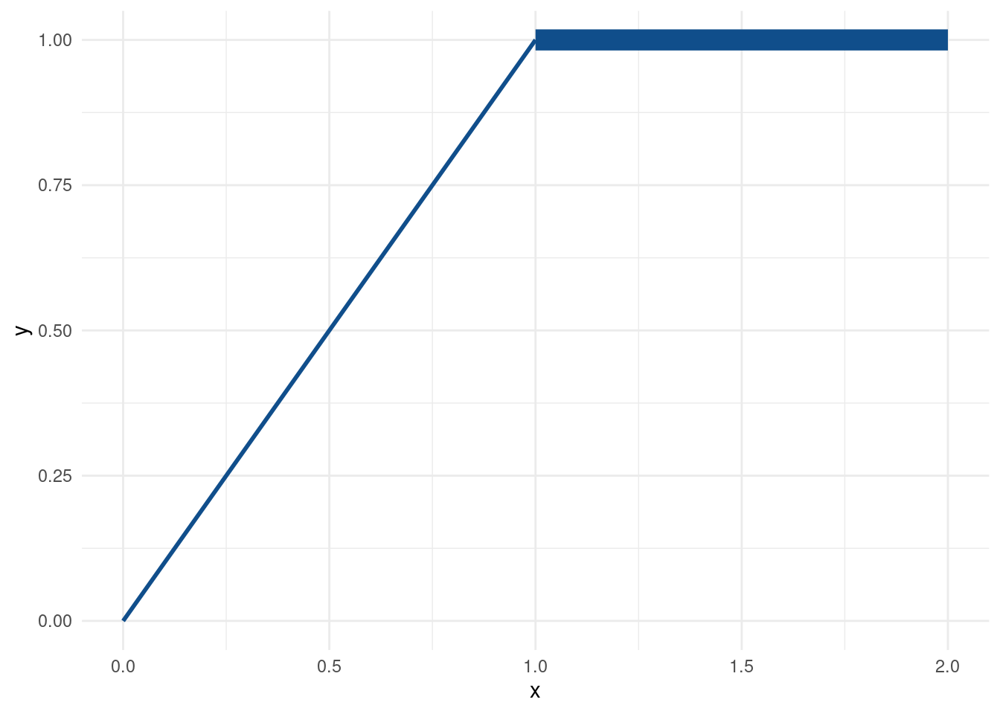
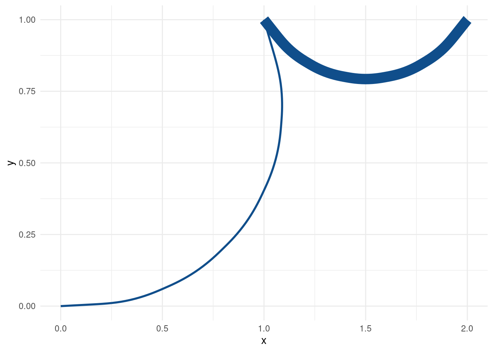
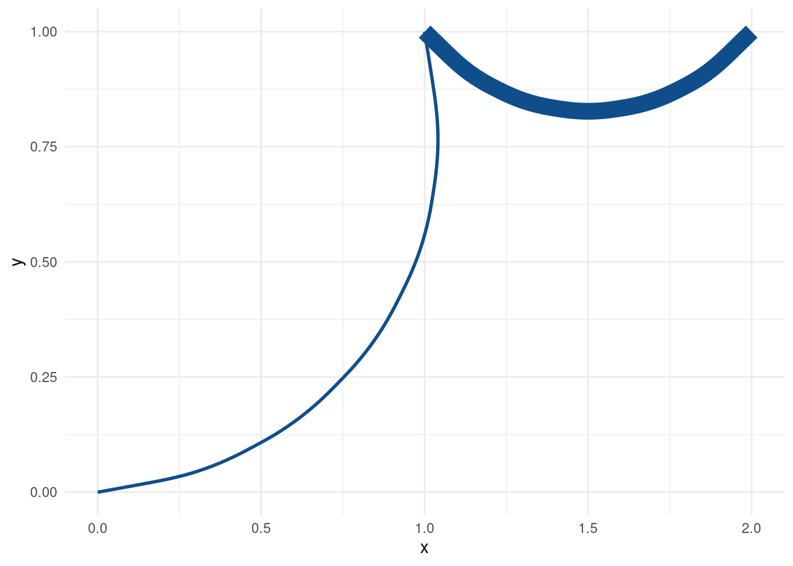
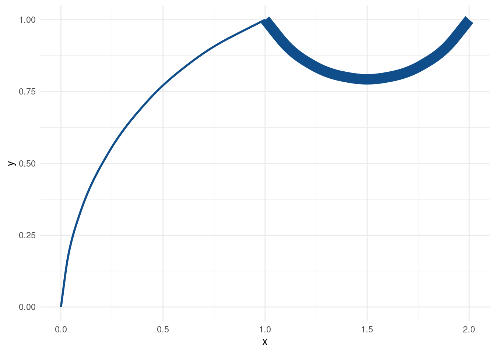
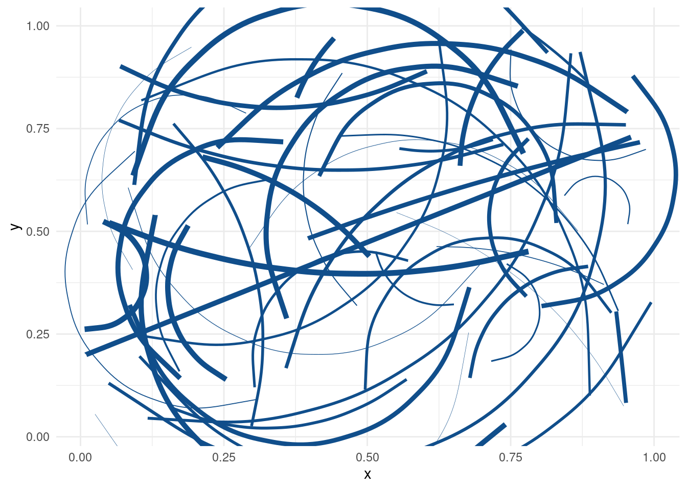

How to use functional programming for ggplot
A couple of weeks back, I recreated an info graphic with ggplot2. The result and the whole story is embedded in this thread on Twitter:
The fun thing about getting better at #ggplot2 is that you begin to mimick other #dataviz.
— Albert Rapp (@rappa753) March 5, 2022
Here is a practice #rstats info graphic I created after seeing a similar infographic from @EatSmarter_de
Original graphic, making of, comments and some ressources below ⬇️🧵 pic.twitter.com/FslScy9sc7
Aside from the embarrasing typo in “What you should know…”, I picked up a useful technique for what do when I want aesthetics to vary within a geom. Sounds complicated? Let’s take a look at a couple of examples.
How do I manually set aesthetics with aes() and scale_*_identity()?
This one is the easy case when all geoms behave properly.
library(tidyverse)
theme_set(theme_minimal())
tib <- tribble(
~x, ~xend, ~y, ~yend, ~size_col,
0, 1, 0, 1, 1,
1, 2, 1, 1, 5
)
tib %>%
ggplot(aes(x = x, xend = xend, y = y, yend = yend, size = size_col)) +
geom_segment(col = 'dodgerblue4') +
scale_size_identity()
Notice that
- the sizes were determined in the
size_colcolumn oftib. - sizes were mapped to the aesthethic via
aes(). - the
scale_size_identity()layer makes sure that the sizes are not assigned by ggplot but taken as given (identity scale layers are available for other aesthetics as well).
How do I manually set aesthetics without aes()?
The last example used aes() to access size_col from tib. However, we then had to make sure that ggplot does not assign sizes based on unique values in size_col. Instead, sizes were supposed to be taken as is. This was the job of scale_size_identity(). Let’s make it work without it.
tib %>%
ggplot(aes(x = x, xend = xend, y = y, yend = yend)) +
geom_segment(col = 'dodgerblue4', size = tib$size_col) This will generate the exact same plot as before (which is why I suppressed the output). In this case, we mapped the sizes manually by assigning a vector of sizes to the size aesthetic within geom_segment() but outside aes().
Of course, now we cannot simply write size = size_col because geom_segment() won’t know that variable. Before, aes() let ggplot know that we mean size_col from the data set tib. Now, we have to pass the vector by accessing it from tib ourself through tib$size_col.
How do I manually set aesthethics when the previous approaches do not work?
Finally, let’s switch from geom_segment() to geom_curve().
tib %>%
ggplot(aes(x = x, xend = xend, y = y, yend = yend)) +
geom_curve(col = 'dodgerblue4', size = tib$size_col, curvature = 0.6) 
This changes our straight lines from before to curved lines. What’s more, I can control how strong the curvature is supposed to be via curvature. But as it is right now, both of our differently-sized curves have the same level of curvature.
Maybe, this ought to be different. Maybe, not all curves are made the same. Maybe, our visualization should reflect the diversity of all the curves out there in this gigantic world we inhabit. All curves are beautiful!
Let’s make this happen as we did before.
tib %>%
ggplot(aes(x = x, xend = xend, y = y, yend = yend)) +
geom_curve(
col = 'dodgerblue4',
size = tib$size_col,
curvature = c(-0.3, 0.6) # two curves, two different curvatures
) Error in if (curvature == 0) {: the condition has length > 1
Oh no! It seems as if geom_curve() expects the argument of curvature to be a single number. Maybe aes() then?
tib %>%
ggplot(aes(x = x, xend = xend, y = y, yend = yend)) +
geom_curve(
aes(curvature = c(-0.3, 0.6)),
col = 'dodgerblue4',
size = tib$size_col
) 
Well, at least this time we can see curves. Unfortunately, the warning let’s us know that curvature is an unknown aesthetic which will be ignored. As you can see, this results in the same curvature for both curves again.
So, it looks like we can only hope to set each curvature separately.
ggplot(mapping = aes(x = x, xend = xend, y = y, yend = yend)) +
geom_curve(
data = slice(tib, 1), # first row of tib
col = 'dodgerblue4',
size = tib$size_col[1], # one size only
curvature = -0.3
) +
geom_curve(
data = slice(tib, 2), # second row of tib
col = 'dodgerblue4',
size = tib$size_col[2], # other size
curvature = 0.6
) 
Alright, this time we got what we wanted. That’s something at least. Honestly, our “solution” is not scalable though. What if we want to draw hundreds of curves?
In fact, this is what slowed me down when I created the info graphic that started this blog post. The text boxes were not vectorized so I would have to place each text box manually. That’s a lot of text boxes and I was having none of that.
So, here is where functional programming stepped in. Let’s recreate what I did based on our curve example. First, we extend tib with another curvature column.
tib <- tib %>% mutate(curvature = c(-0.3, 0.6))
tib# A tibble: 2 × 6
x xend y yend size_col curvature
<dbl> <dbl> <dbl> <dbl> <dbl> <dbl>
1 0 1 0 1 1 -0.3
2 1 2 1 1 5 0.6Then, we use pmap() to create a list of curve layers. If you have not used any functional programming before, checkout my YARDS lecture notes on that topic. Basically, what we will do is to apply the geom_curve() function to each row of the tib data. Via ~ (in front of the function) and ..1, ..2, etc. we can then say where to stick in the values from each of tib’s columns.
curve_layers <- tib %>%
pmap(~geom_curve(
mapping = aes(x = ..1, xend = ..2, y = ..3, yend = ..4),
size = ..5,
curvature = ..6,
col = 'dodgerblue4'
))
curve_layers[[1]]
mapping: x = 0, y = 0, xend = 1, yend = 1
geom_curve: arrow = NULL, arrow.fill = NULL, curvature = -0.3, angle = 90, ncp = 5, lineend = butt, na.rm = FALSE
stat_identity: na.rm = FALSE
position_identity
[[2]]
mapping: x = 1, y = 1, xend = 2, yend = 1
geom_curve: arrow = NULL, arrow.fill = NULL, curvature = 0.6, angle = 90, ncp = 5, lineend = butt, na.rm = FALSE
stat_identity: na.rm = FALSE
position_identity Here, we have set the first column of tib (x) to the x-aesthetic within aes. Then, we proceeded similarly for all other columns. This resulted in a list of curve layers.
These are useless without a ggplot() head. So, let’s complete the plot.
ggplot() +
curve_layers Damn, these are some nice functionally created curves. Now, let’s put our new technique to a test. Can it handle arbitrarily many curves?
n_curves <- 50
curve_layers <- tibble(
x = runif(n_curves),
xend = runif(n_curves),
y = runif(n_curves),
yend = runif(n_curves),
size = runif(n_curves, 0, 2),
curvature = runif(n_curves, -1, 1)
) %>%
pmap(~geom_curve(
mapping = aes(x = ..1, xend = ..2, y = ..3, yend = ..4),
size = ..5,
curvature = ..6,
col = 'dodgerblue4'
))
ggplot() + curve_layers
Congratulations! We have successfully created drawings of a toddler. And the even better news is that we can draw as many curves as we want.
Surprisingly, before I started this blog post, I was not aware that you can simply add lists to ggplot() and it works. As you will see in the Twitter thread on top of this post, I initially thought that one had to combine the list with more functional programming like so.
combine_gg_elements <- function(...) {
Reduce(`+`, list(...))
}
combine_gg_elements(ggplot(), curve_layers)
This was something I picked up from Hadley Wickham’s ggplot2 book but it seems that we don’t need that anymore (the combine function, the book is still a great ressource). But I leave this here for completeness’ sake. Once again, writing a blog post has taught me stuff I thought I already knew. If you want to watch me learn more stuff or want to learn more ggplot things yourself, feel free to subscribe to my RSS feed or follow me on Twitter.